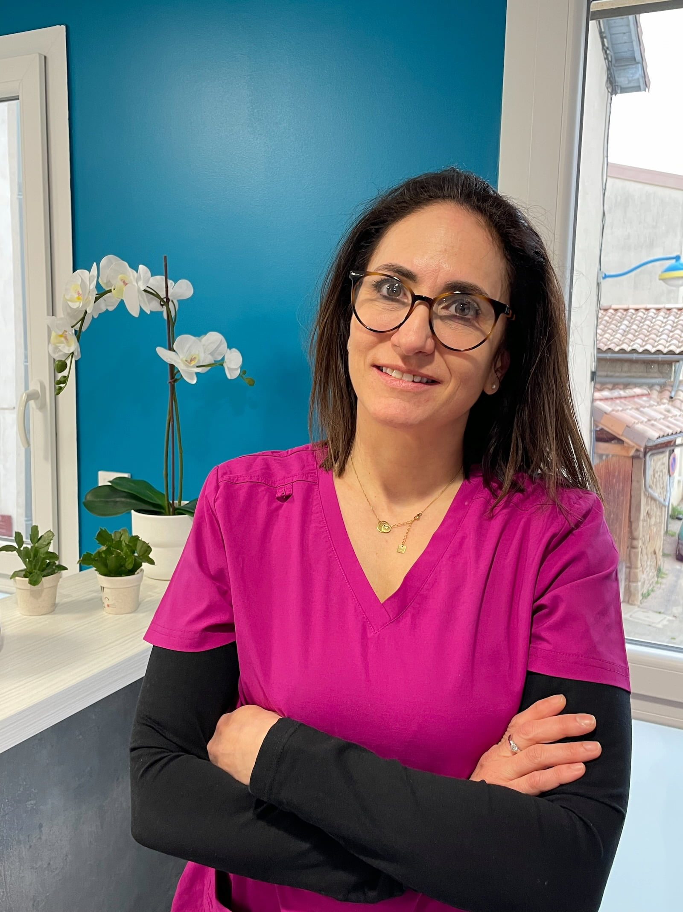

À propos

Chirurgien Dentiste en omnipratique, en zone rurale depuis plus de 25 ans, j'accorde une grande importance au contact humain simple, direct et de confiance. Comme le médecin de famille, j'ai eu la chance de pouvoir suivre mes patients dans la durée, de les voir évoluer avec moi.
Je me considère comme une soignante attentive à l'humain dans sa réalité et sa singularité.
Parcours
-
Doctorat de chirurgie dentaire, diplômée de la faculté de Clermont Ferrand
Inscription à l'ordre n°260009481
Approche
Je prends le temps d'expliquer, d'accompagner et de rassurer quand c'est nécessaire.
Je privilégie des soins adaptés dans un cadre professionnel simple et humain.